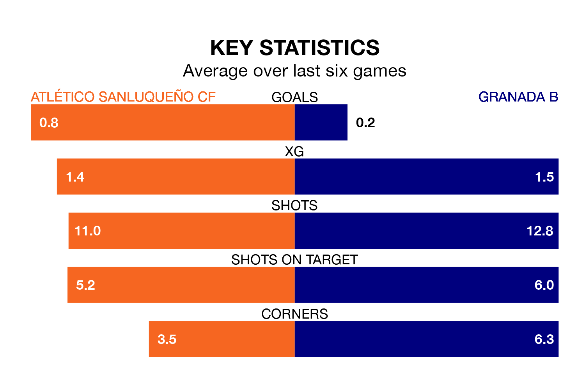

Granada B come to the Estadio El Palmar to play Atlético Sanluqueño CF on late Sunday in terrible form, having collected just one point from their last six games.
The visitors have drawn just one of their last six fixtures, while Atlético Sanluqueño have two wins and two draws.
Granada B are bottom of the table after 23 games, of which they have won two and drawn five, earning 11 points.
Atlético Sanluqueño are six places ahead of the visitors in 14th, with six wins and eight draws putting them on 26 points.
In the last 10 years, Atlético Sanluqueño and Granada B have played each other on 10 occasions. Atlético Sanluqueño won one of them, Granada B four, and they drew five times.
On average, Atlético Sanluqueño scored 0.7 goals and Granada B 1.1 in those matches.
Their last meeting was on October 28, when Granada B won 2-1 at home.
With 12 goals in 23 games so far this season, Granada B are the league's lowest scorers with 0.5 goals per game. And they are conceding more than average, letting in 37 goals at a rate of 1.6 per game.
The home team, meanwhile, are average scorers, with 1.1 goals per game. They have also conceded 1.1 goals per game.
In Francisco Mwepu, Atlético Sanluqueño have one of the league's most on-form strikers so far this season. He has notched seven goals in 21 appearances, to sit sixth in the scoring charts.
His goal rate of one every 208 minutes is quicker than that of Julio Martínez Cortés, Granada B's top scorer with a goal every 273 minutes, and a total of three goals in 14 games.
Atlético Sanluqueño's last match was on February 11, a 0-0 draw against UD Ibiza.
Granada B lost 2-0 against Linares Deportivo last time out, also on February 11.
Updated: 13:04 (UTC), 16/02/24